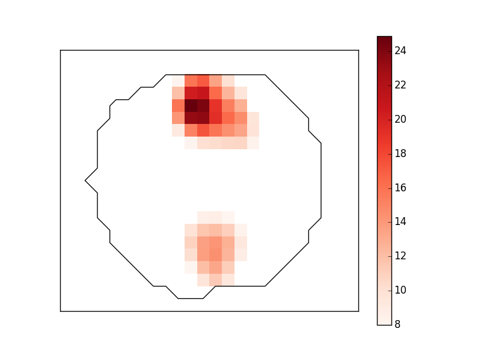

Compute dSPM inverse solution on MNE evoked dataset in a volume source space and stores the solution in a nifti file for visualisation.
Python source code: plot_compute_mne_inverse_volume.py
# Author: Alexandre Gramfort <alexandre.gramfort@telecom-paristech.fr>
#
# License: BSD (3-clause)
print(__doc__)
import numpy as np
import matplotlib.pyplot as plt
from mne.datasets import sample
from mne import read_evokeds
from mne.minimum_norm import apply_inverse, read_inverse_operator
data_path = sample.data_path()
fname_inv = data_path + '/MEG/sample/sample_audvis-meg-vol-7-meg-inv.fif'
fname_evoked = data_path + '/MEG/sample/sample_audvis-ave.fif'
snr = 3.0
lambda2 = 1.0 / snr ** 2
method = "dSPM" # use dSPM method (could also be MNE or sLORETA)
# Load data
evoked = read_evokeds(fname_evoked, condition=0, baseline=(None, 0))
inverse_operator = read_inverse_operator(fname_inv)
src = inverse_operator['src']
# Compute inverse solution
stc = apply_inverse(evoked, inverse_operator, lambda2, method)
stc.crop(0.0, 0.2)
# Export result as a 4D nifti object
img = stc.as_volume(src,
mri_resolution=False) # set True for full MRI resolution
# Save it as a nifti file
import nibabel as nib
nib.save(img, 'mne_%s_inverse.nii.gz' % method)
data = img.get_data()
# Plot result (one slice)
coronal_slice = data[:, 10, :, 60]
plt.close('all')
plt.imshow(np.ma.masked_less(coronal_slice, 8), cmap=plt.cm.Reds,
interpolation='nearest')
plt.colorbar()
plt.contour(coronal_slice != 0, 1, colors=['black'])
plt.xticks([])
plt.yticks([])
plt.show()
Total running time of the example: 2 seconds